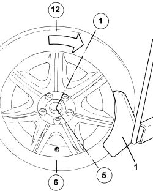
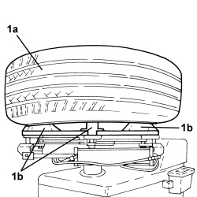
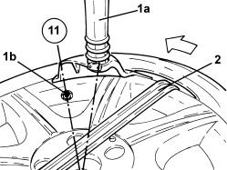
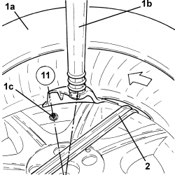
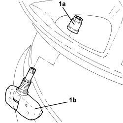
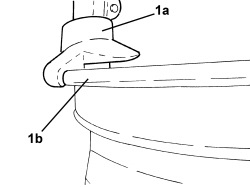

4450B90 TYRE INFLATION PRESSURE SENSOR (ONE)
- Path
- Procedures > 44 SUSPENSION AND WHEELS > 4450 HUBS AND WHEELS > 4450B WHEELS AND COMPONENTS > 4450B90 TYRE INFLATION PRESSURE SENSOR (ONE)
- Kind
- repair procedure (removal / refitting; the operation number is the code)
- Applies to
- all engines; all production periods
- Interactive page
- https://sloeber94.github.io/elrnDB-fCrm/en/#/194004715
Applies to: all engines; all production periods
 Removing
Removing
 Refitting
Refitting- Remove the relevant wheel.
- Remove the valve plug and deflate the tyre.
1. Break the tyre bead with the valve pointing to 6 o'clock and work from 1 o'clock to 5 o'clock.

Applies to: all engines; all production periods
- Continue to break the tyre bead working clockwise around the wheel so that the sensor never enters the tool operating area.
- Repeat the above on the inner side of the wheel.
1. Fit wheel (1a) on tool spindle (1b), taking care not to attach the rim in the sector where the sensor is located.

Applies to: all engines; all production periods
1. Lower hydraulic rm (1a) to the edge of the rim with sensor (1b) at 11 o'clock in relation to the hydraulic arm
2. Prise the tyre out of the rim with an appropriate lever.
- Turn the wheel anticlockwise to prise the tyre bead out of the rim.

Applies to: all engines; all production periods
1. Raise tyre (1a) from the rim, lower hydraulic arm (1b) on the inner edge with sensor (1c) at 11 o'clock in relation to the hydraulic arm.
2. Prise the tyre out of the rim with an appropriate lever, turning the wheel anticlockwise.

Applies to: all engines; all production periods
- Remove the tyre from the rim.
1. Unscrew nut (1a) securing sensor (1b) to the rim and remove.

Applies to: all engines; all production periods
Refitting
Removing- Fit the sensor in its seat, checking that the side pins rest on the rim.
1. Fit the rim on the tool spindle and ensure hydraulic arm (1a) is in contact with the edge of rim (1b) as shown in the figure.

Applies to: all engines; all production periods
- Lubricate the entire rim surface and the inner and outer tyre bead area.
- Fit the inner edge of the tyre on the rim using the hydraulic arm.
- Turn the spindle clockwisse and press on the tyre by hand until it is fully fitted.
- During tyre installation, the sensor must stay in the area from 5 o'clock to 7 o'clock.
- Do the same to fit the outer edge.
- Inflate the tyre to the specified pressure.
- Tighten the plug to the valve and remove the wheel from the tool.